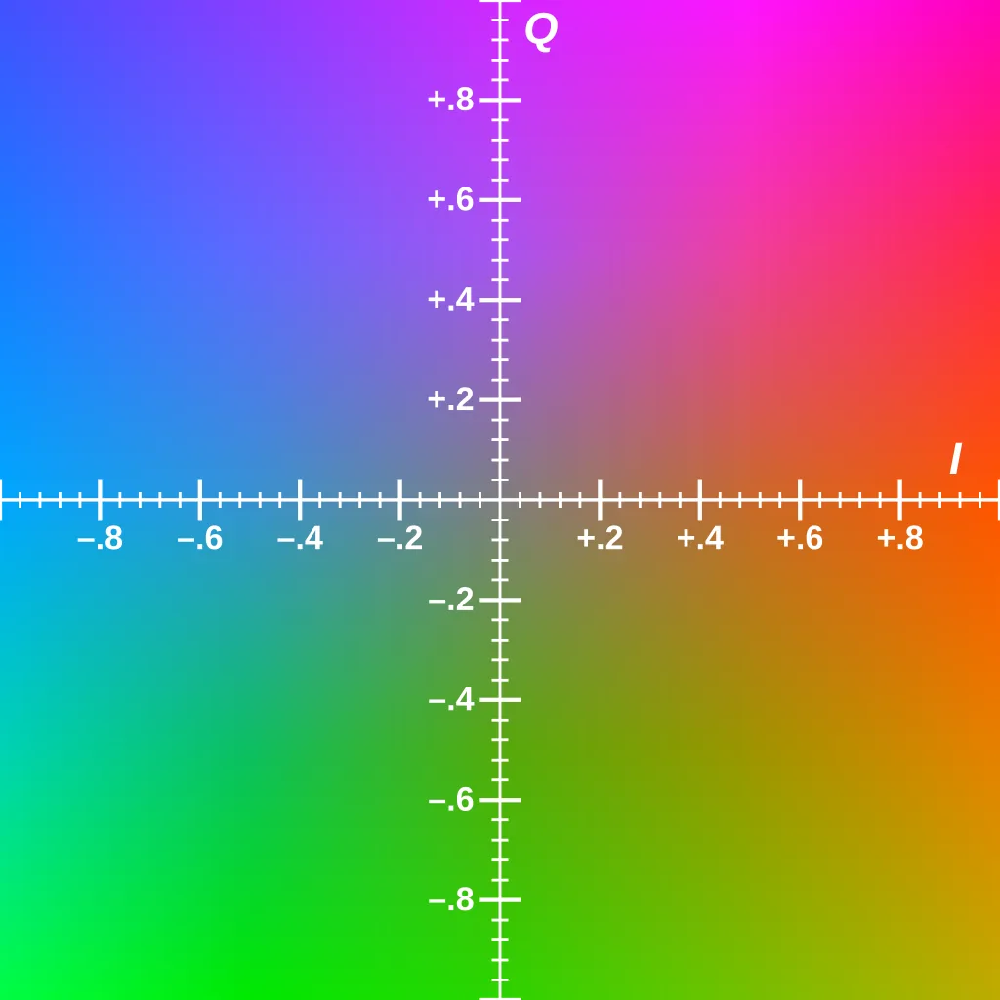

YIQ
YIQ 的时代背景是黑白电视变成彩色电视。它是一个电视系统标准。Y 就是亮度，也就是原来的黑白电视。黑白想加入色彩，按照 RGB 的思想，就要把一维空间升成三维。所以 YIQ 引入了另外两个维度用来表示颜色。

[1]
YIQ 的优势是，相对于 HSV，YIQ和RGB 仍然是一个线性变换，计算复杂度低。另外它的亮度通道被提取出来了，可操纵性强。
$$
\begin{bmatrix} Y \\ I \\ Q \end{bmatrix}
\approx
\begin{bmatrix}
0.299 & 0.587 & 0.114 \\
0.5959 & -0.2746 & -0.3213 \\
0.2115 & -0.5227 & 0.3112
\end{bmatrix}
\begin{bmatrix} R \\ G \\ B \end{bmatrix}
$$
[2]
Reference
- https://en.wikipedia.org/wiki/YIQ
- https://wikimedia.org/api/rest_v1/media/math/render/svg/fcdfdebe09590e617de9e523514a79f506086a74